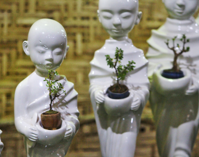

Why do we love Antiques?
Collecting antiques is a passion shared by many people, from the casual collector to the serious dealer. Despite the modern “Ikea” age of convenience (or perhaps because of it), the enthusiasm with which people seek out these historic treasures remains undiminished.
By evoking the essence of a bygone era, antiques bring us closer to the past. They help us learn about history in a formal sense, but also create a sense of nostalgia for another time.



 by Melvin
by Melvin